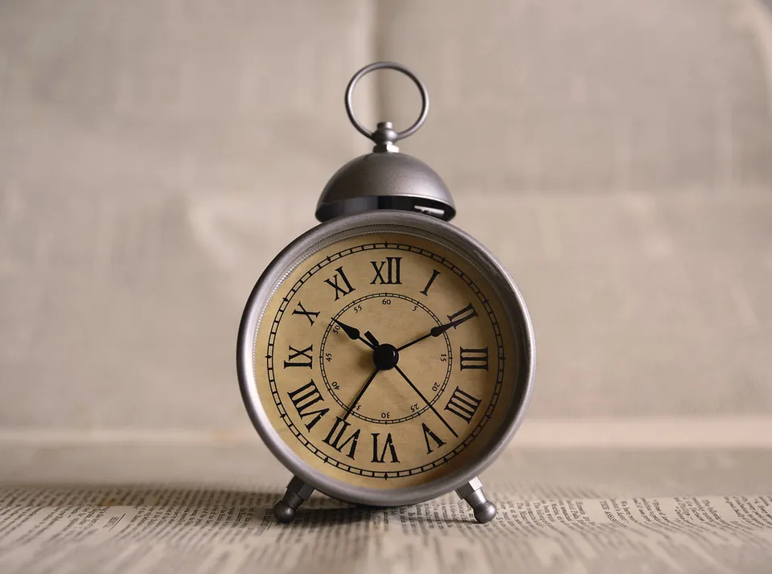

Ghi một dòng, cất đi
Mất chưa tới 30 giây — không cần viết hay, càng ngắn càng dễ nhớ
Tới giờ lo rồi.
Mở danh sách bên dưới, xem từng mục một. Không cần giải quyết hết — chỉ cần ghi lại một dòng rồi đóng mục đó lại.
Đang chờ lo
Chưa có gì đang chờ. Ghi một suy nghĩ đang lặp ở trên rồi cất đi.
Đã đóng
Danh sách chỉ nằm trong trình duyệt này, trên máy bạn. Không có tài khoản, không gửi lên máy chủ, không ai khác đọc được.
Cách này dựa trên kỹ thuật "worry time" mà NHS inform hướng dẫn: chọn một khung 10–15 phút cố định mỗi ngày, hoãn lo sang đó.
Tới giờ thì làm gì
Xem lại, không cần giải quyết hết
Khung giờ lo không phải lúc để tìm ra giải pháp cho mọi thứ. Nó là lúc để bạn nhìn thẳng vào từng mục một, xem mục nào còn đáng lo và mục nào đã tự nhẹ đi.

-
Mở danh sách, đọc chậm từng mục
Đọc thành tiếng nếu ở một mình. Nhiều mục sẽ thấy nhỏ hơn lúc nó vừa xuất hiện trong đầu.
-
Hỏi: việc này mình kiểm soát được phần nào?
Nếu có một việc làm được, ghi đúng một bước nhỏ. Nếu không có gì làm được ngay, đó là dấu hiệu để đóng mục lại.
-
Hỏi: nếu mai mới biết thì sao?
Câu này giúp tách "chưa biết" khỏi "chắc chắn xấu". Phần lớn chuyện chỉ cần chờ thêm thông tin.
-
Ghi một dòng "giờ mình nghĩ sao" rồi đóng mục
Một dòng là đủ. Đóng mục là cách nói với bộ não: việc này đã được xem xét, không cần nhắc lại nữa.
-
Hết giờ thì dừng, làm việc khác
Pha một ly nước, đi vài bước, hoặc thở 30 giây. Đừng để khung 10 phút kéo dài thành cả buổi tối.
Hiểu vì sao đầu óc cứ nghĩ mãi → Neo lại 5-4-3-2-1 Ghi cảm xúc hôm nay
Cách dùng & riêng tư
Một khung giờ, một danh sách, không cần hoàn hảo
-
Cùng một giờ mỗi ngày
Mặc định 20:00, dài 10 phút. Giữ cố định để não biết "chưa tới giờ thì chưa cần lo". Đổi giờ lúc nào cũng được, các mục đang chờ sẽ dời theo.
-
Chỉ nằm trên máy bạn
Lưu bằng
localStoragecủa trình duyệt. Xoá dữ liệu trình duyệt là mất; nút "Xoá dữ liệu" cũng xoá sạch ngay. -
Đừng chọn sát giờ ngủ
Để khung giờ lo cách giờ đi ngủ ít nhất một tiếng. Lo xong mà leo lên giường ngay thì dễ mang theo.
-
Đang rất nặng?
Hoãn lo giúp bớt bị kéo đi, nhưng không thay cho hỗ trợ. Nếu lo gần như mọi ngày, hãy xem khi nào nên tìm hỗ trợ.